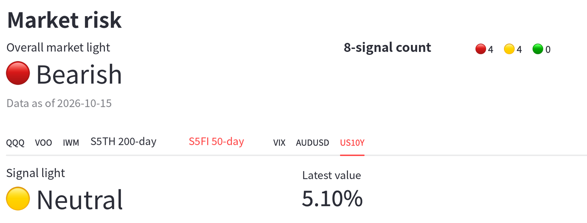
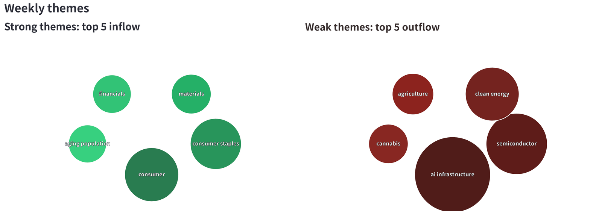
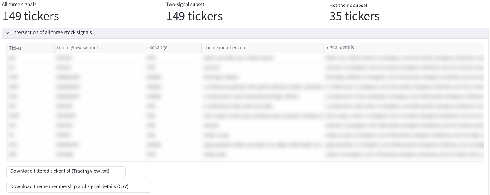
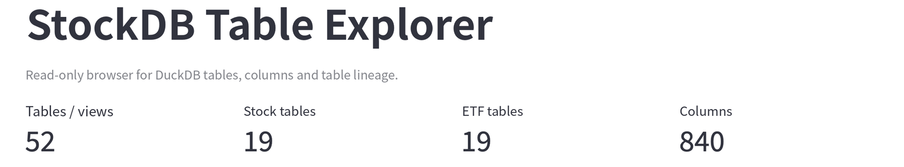
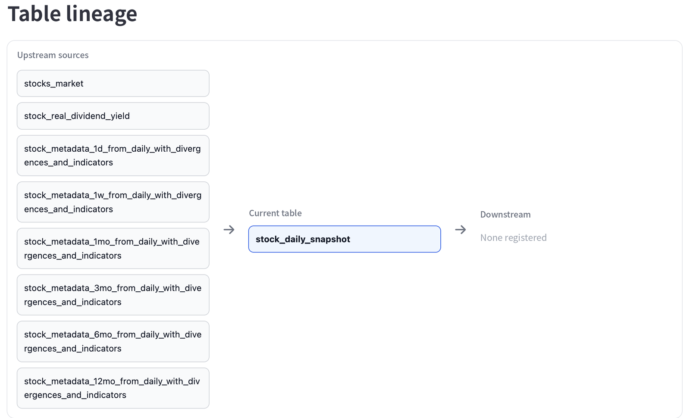
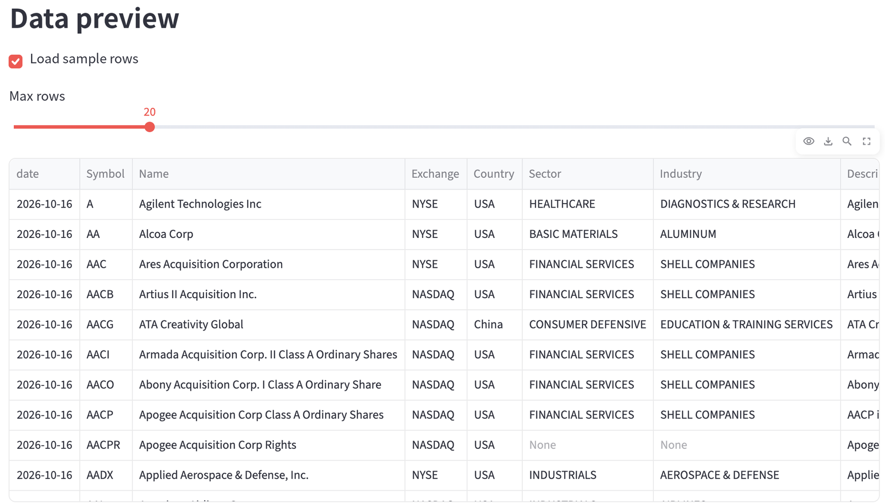

A personal market terminal. Signals, not headlines.
One dashboard that shows what the whole market is doing, without reading the news.
- How much risk there is
- Where money is rotating
- Which stocks are suddenly drawing money, or quietly building momentum
Retail tools show one chart at a time. I needed the whole market at once, so I built the data first.
How the data turns into decisions: market backdrop, theme rotation, stock selection.
Each question is answered by metrics the warehouse has already computed, so the strategy is rules applied to data.
Screenshots from my working dashboard. Rule definitions, thresholds and individual stock picks are hidden or blurred.



Themes ranked by real trading flow, and stocks ranked by how unusual their strength is, ready before the US market opens.
The warehouse that produces every metric above, refreshed automatically each trading day.
Each layer can be rebuilt without touching the others, and dashboards only ever read finished tables.
As the warehouse grew, I built a read-only Streamlit explorer to search tables, inspect their columns, trace where each table comes from, and preview sample rows without writing SQL.



Every table name is built from three parts: asset, timeframe and layer, for example stock_…_1w_…. Names are validated and set in one config file, so the whole schema can be renamed in one place.
CREATE OR REPLACE left dead space.